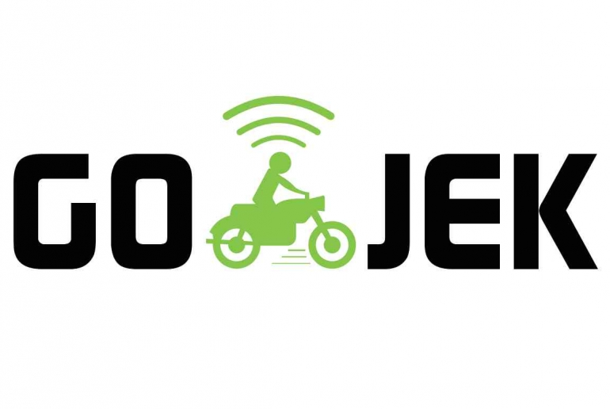

GOJEK adalah sebuah perusahaan teknologi berjiwa sosial yang bertujuan untuk meningkatkan kesejahteraan pekerja di berbagai sektor informal di Indonesia. Kegiatan GO-JEK bertumpu pada 3 nilai pokok: kecepatan, inovasi, dan dampak sosial.
Bermula di tahun 2010 sebagai perusahaan transportasi roda dua melalui panggilan telepon, GO-JEK kini telah tumbuh menjadi on-demand mobile platform dan aplikasi terdepan yang menyediakan berbagai layanan lengkap mulai dari transportasi, logistik, pembayaran, layan-antar makanan, dan berbagai layanan on-demand lainnnya.
GO-JEK telah resmi beroperasi di 25 kota besar di Indonesia, termasuk Medan, Batam, Palembang, Pekanbaru, Jambi, Padang, Bandar Lampung, Jabodetabek, Bandung, Sukabumi, Yogyakarta, Semarang, Solo, Surabaya, Gresik, Malang, Sidoarjo, Balikpapan, Samarinda, Pontianak, Banjarmasin, Manado, Makassar, Denpasar, Mataram dengan rencana pengembangan di kota-kota lainnya pada tahun mendatang.
Solv, logo baru ini menjadi jawara dari sekian lama proses yang ditempuh tim-tim berbakat. Solv adalah simbol yang sempurna untuk dijadikan logo baru; cukup unik untuk menonjol diantara lautan aplikasi di internet, gampang dikenali sekali kamu lihat, dan tetap bisa mengakomodasi visi dan misi Gojek di masa depan. Sama seperti logo sebelumnya, Solv juga bisa kamu temukan di rompi Gojek, iklan Gojek, dan berbagai tempat lainnya.
Waktu Solv akhirnya ditetapkan jadi logo baru, bersamaan dengan itu tim desainer di balik Gojek memutuskan Maison Neue Extended Bold jadi tipografi yang menyertainya. “Kenapa harus Maison Neue Extended Bold yang dipilih jadi font Gojek?” Mungkin kamu bertanya-tanya. Jawabannya gampang aja. Soalnya font Gojek yang satu ini ternyata cocok, mudah dikenali, dan mampu mengakomodasi semua kebutuhanku~
Logo GOJEK Sebelumnya

Logo GOJEK Terbaru
Berikut adalah layanan-layanan GOJEK yang paling sering digunakan pelanggan:
Sosial Media Kami
| gojekindonesia | |
| Gojek Indonesia |